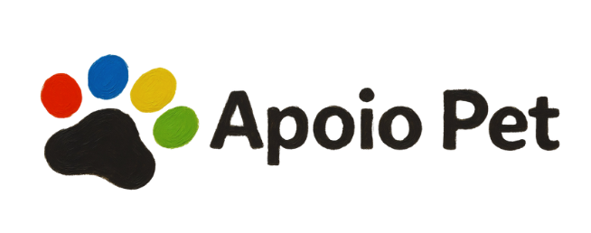
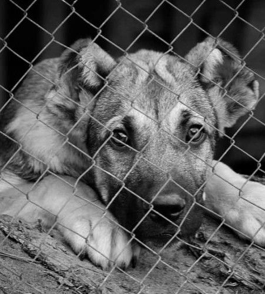
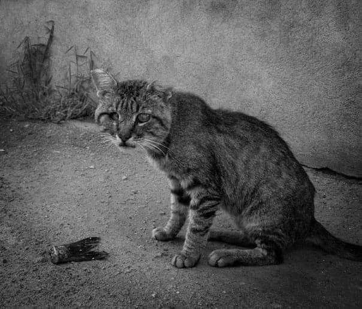
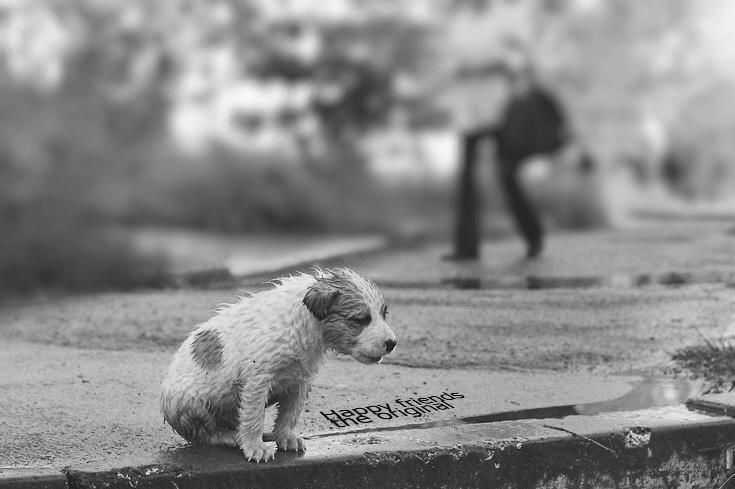
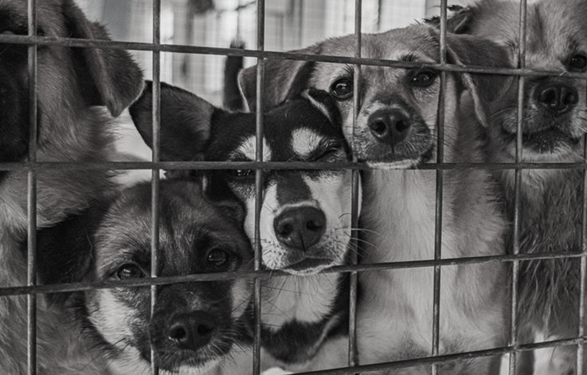
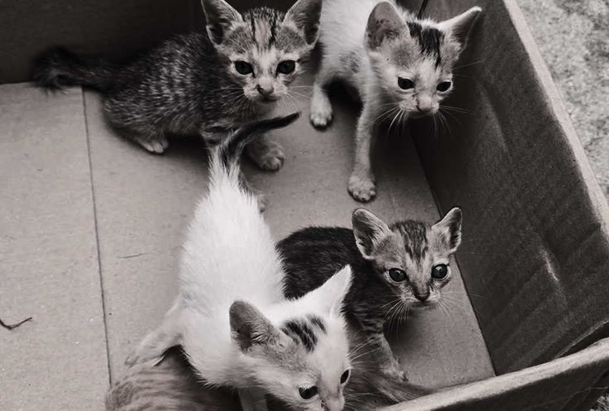
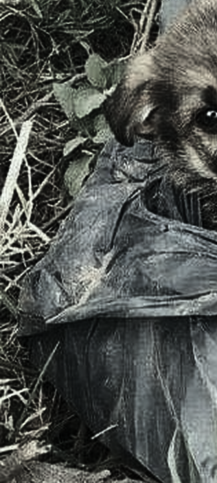
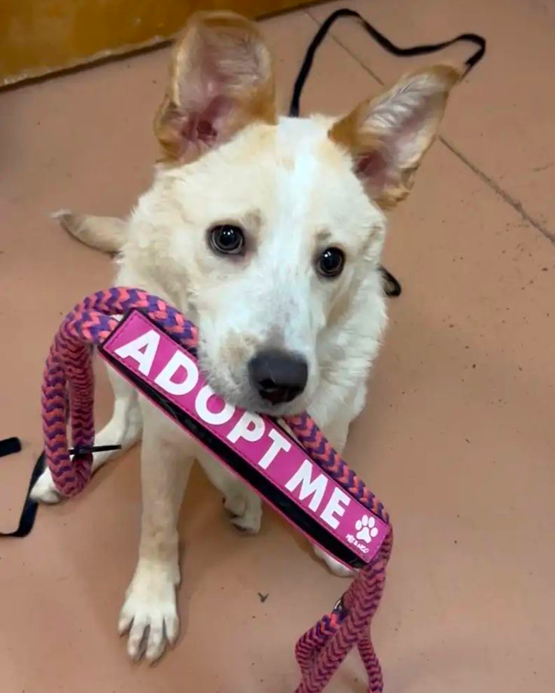

O Apoio Pet é uma iniciativa dedicada ao cuidado, proteção e resgate de animais em situação de rua. Nosso propósito é oferecer uma segunda chance para cães e gatos que foram abandonados, garantindo acolhimento, alimentação, cuidados veterinários e, principalmente, muito amor.



O Apoio Pet tem como objetivo resgatar animais em situação de rua, oferecendo cuidados essenciais como alimentação, abrigo e atendimento veterinário.
Buscamos promover a recuperação desses animais e encontrar lares responsáveis, onde possam viver com segurança e amor.
Ao longo da nossa trajetória, o Apoio Pet já realizou mais de 350 resgates de animais em situação de rua e abandono. Desses, a maioria foi recuperada com sucesso, recebendo cuidados veterinários, alimentação e abrigo. Mais de 100 animais já foram adotados, encontrando lares responsáveis e cheios de amor. Também atuamos em diversos atendimentos emergenciais, ajudando animais em situações críticas.




Adotar é um ato de amor que transforma vidas. Ao escolher adotar, você oferece uma nova chance a um animal que já passou por abandono, garantindo um lar cheio de carinho, cuidado e segurança. Ao adotar, você não só ganha um amigo fiel, mas também ajuda a abrir espaço para que outros animais possam ser resgatados.
Adote!